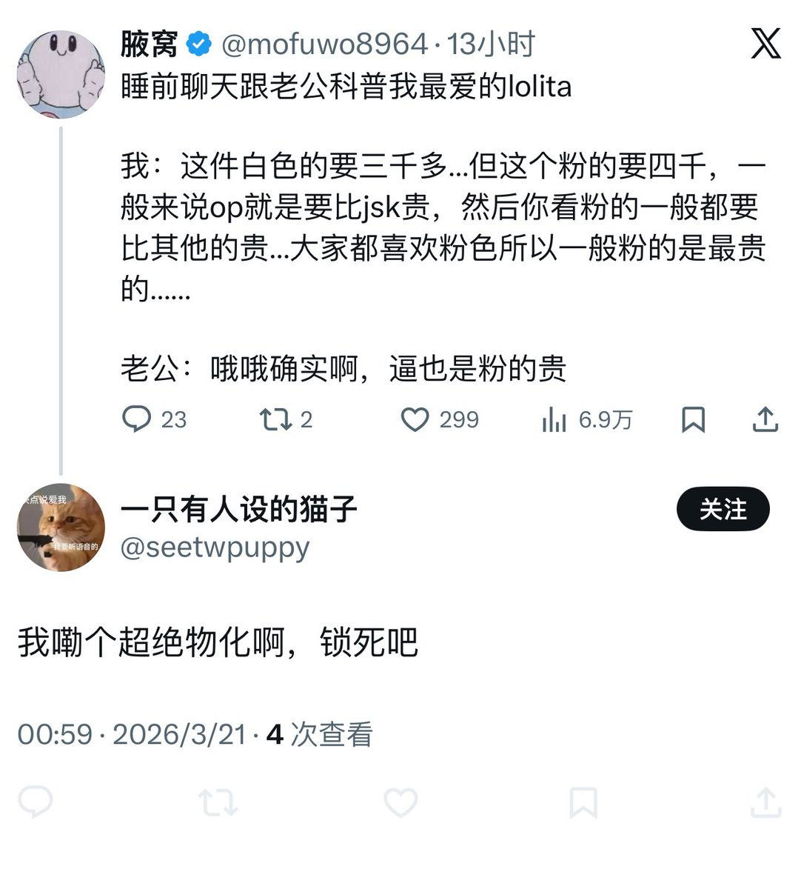

支女能别这么爱审判别人吗😇跟自己家对象说点地狱笑话到底咋了。。你平时跟朋友说话会小心翼翼吗……
何况事实就是在卖逼的里面粉逼更能卖上价啊，你要是说我物化卖逼的就先把卖逼的赶尽杀绝呗。。哪个卖逼的不做粉嫩手术。。如果知道对象和我天天母狗公畜的叫还每天105106加各种反串国男织女发言不得再炎上一次啊🤣我天天还说88w彩礼掏不出来就滚蛋呢。。是不是更物化了捏
不过很抱歉让网友失望了🤓对象没嫖过娼也不约炮，曾两次阻止过路过看到的性骚扰行为，成绩好拿了很多奖学金也会主动帮助有困难的人（帮助障害者/语言不通的人）承担大部分家务出门会给我带礼物，生活里很尊重每个人也参加过人权游行和宣传相关，甚至也发表过女权相关的言论，（当然网友又要说女权男只是为了操笔呜呜呜女权男怎么这么坏！）平时很尊重我也很尊重别人，并非仅仅是女性，他是一个很正直很善良的人，就是我俩讲话平时比较恶俗，但是也0个人受到伤害🙏
何况事实就是在卖逼的里面粉逼更能卖上价啊，你要是说我物化卖逼的就先把卖逼的赶尽杀绝呗。。哪个卖逼的不做粉嫩手术。。如果知道对象和我天天母狗公畜的叫还每天105106加各种反串国男织女发言不得再炎上一次啊🤣我天天还说88w彩礼掏不出来就滚蛋呢。。是不是更物化了捏
不过很抱歉让网友失望了🤓对象没嫖过娼也不约炮，曾两次阻止过路过看到的性骚扰行为，成绩好拿了很多奖学金也会主动帮助有困难的人（帮助障害者/语言不通的人）承担大部分家务出门会给我带礼物，生活里很尊重每个人也参加过人权游行和宣传相关，甚至也发表过女权相关的言论，（当然网友又要说女权男只是为了操笔呜呜呜女权男怎么这么坏！）平时很尊重我也很尊重别人，并非仅仅是女性，他是一个很正直很善良的人，就是我俩讲话平时比较恶俗，但是也0个人受到伤害🙏
